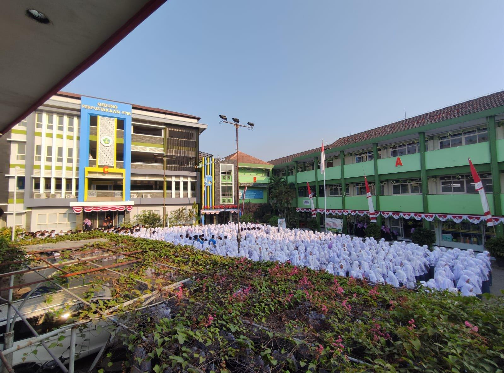
SMA Islam di Taman, Sidoarjo
Sejak 1970 di Jalan Raya Ngelom, terakreditasi A. Tahun 2026, 82 siswa kami diterima di PTN.
Sekolah Ma'arif di Ngelom sejak 1970
Visinya menjadi sekolah Islam berhaluan Ahlussunnah wal Jama'ah yang modern dan profesional, dengan kurikulum nasional.
- YayasanPendidikan dan Sosial Ma'arif
- AkreditasiA
- Kepala sekolahUmmi Nahdliyah, M.Pd.I.
- GedungTiga lantai, kelas intensif ber-AC
- LaboratoriumFisika, kimia, biologi, komputer
- Program bahasaEnglish, Japanese dan Arabic Day

Keseharian siswa Wachid Hasyim 2
-
Sholat dhuha dan istighosah bersama
Pelajaran dibuka dan ditutup dengan doa. Siswa sholat dhuha berjamaah, istighosah bersama, dan mengaji tiap akhir bulan.
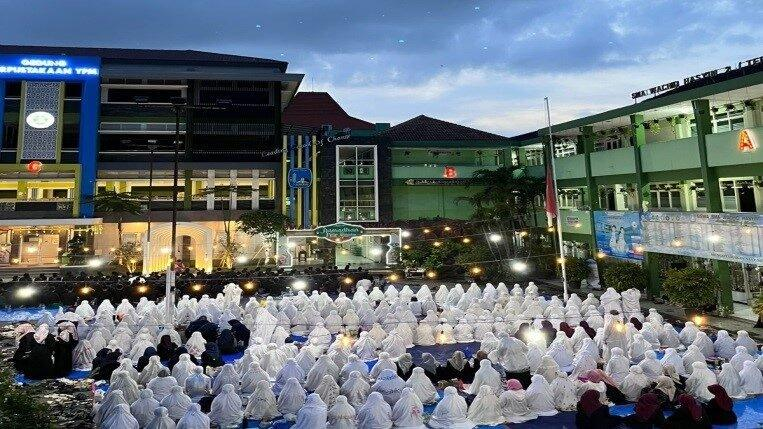
-
Kelas intensif dan lab komputer
Try out rutin, kelas intensif di lantai tiga, dan pembelajaran berbasis IT untuk persiapan masuk perguruan tinggi.
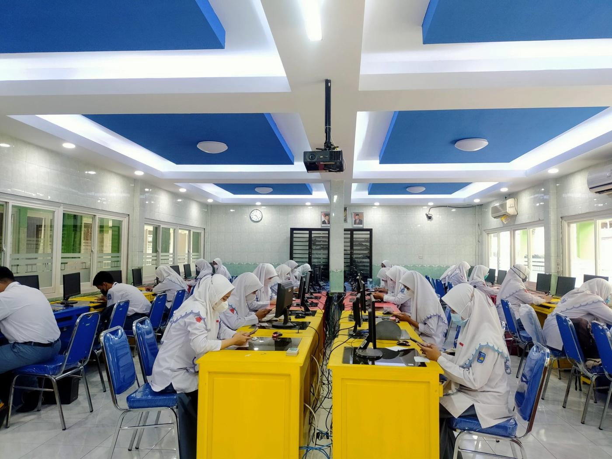
-
Class meet, outdoor learning dan pondok Ramadhan
Di luar kelas ada lomba antarkelas, belajar di sekolah hutan wakaf, karnaval Muharram dan pondok Ramadhan.
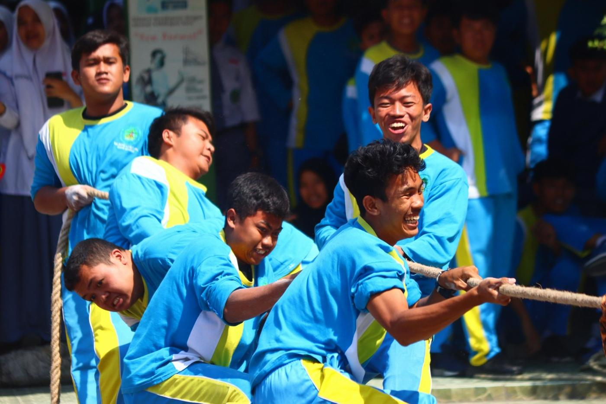
19 ekstrakurikuler pilihan siswa
Juga sepak bola, basket, voli, banjari, karate, band, paduan suara, qiro'ah, PEC, jurnalistik, mading, desain grafis, tata boga dan tata busana.
- Teater
Seratus siswa memainkan monolog pada upacara 17 Agustus 2025.
- Pencak silat
Latihan rutin dan kejuaraan antarpelajar se-Jawa Timur.
- PMR
Dua siswa mewakili Sidoarjo di Jumbara PMR Jawa Timur 2025.
- Pramuka
Perkemahan, latihan baris dan kegiatan bakti siswa.
- Paskibra
Pengibar bendera untuk upacara sekolah dan hari besar.
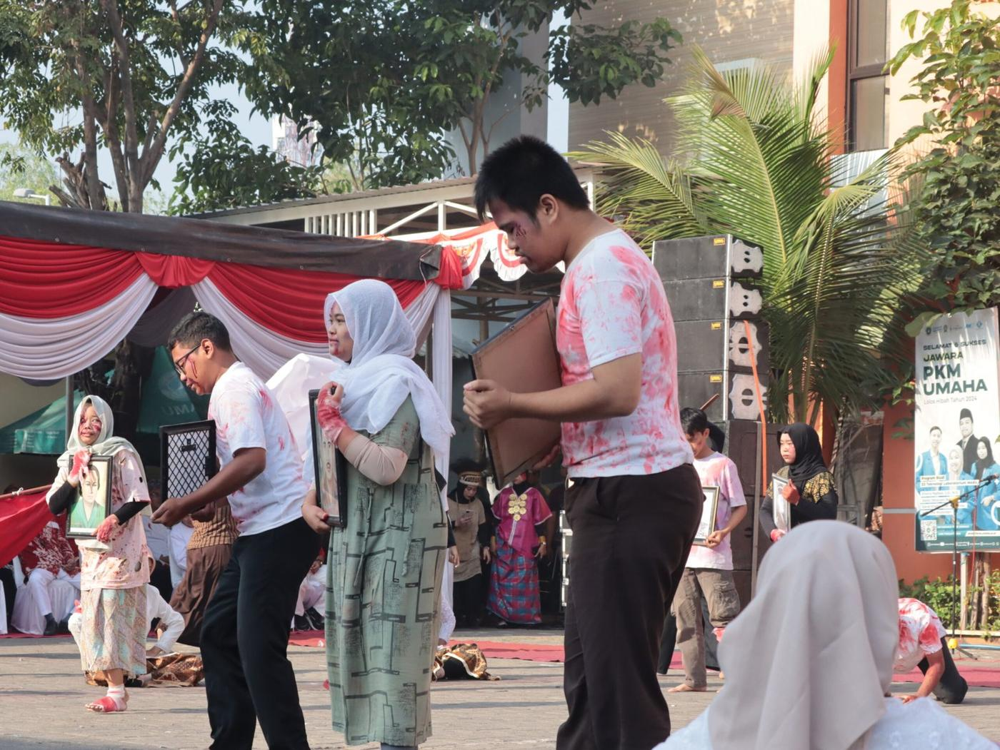
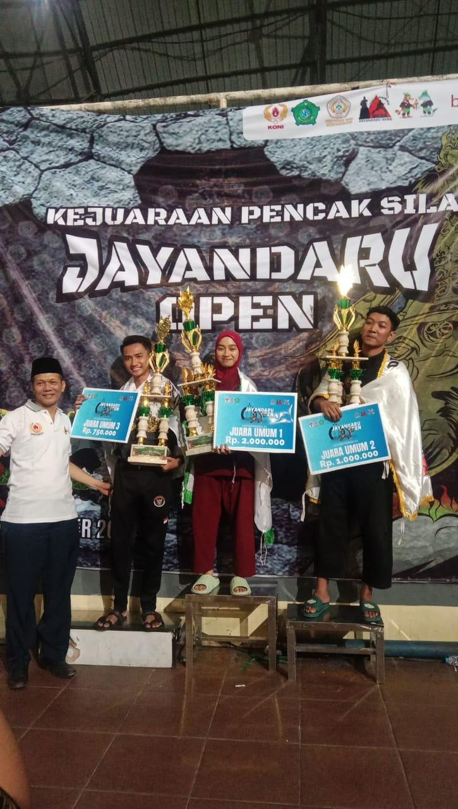
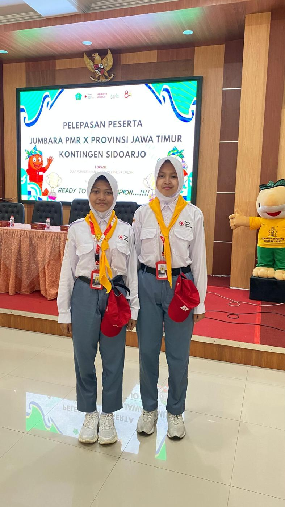
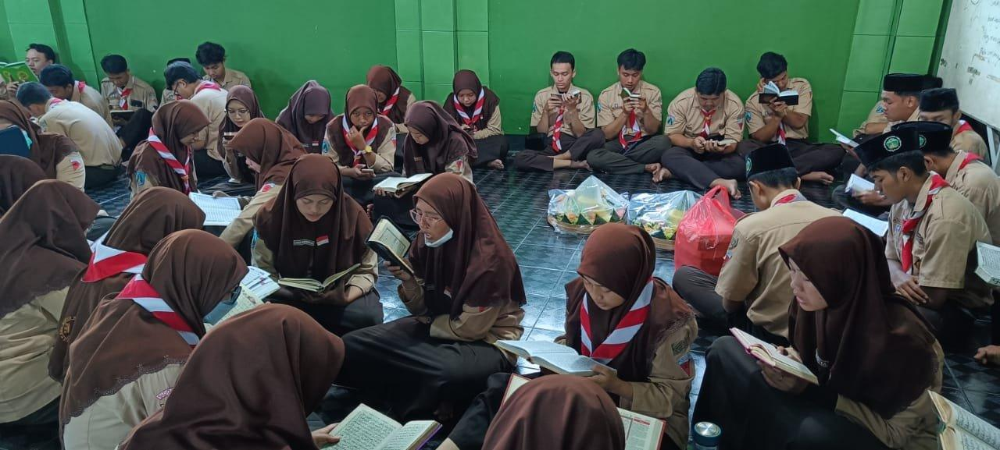
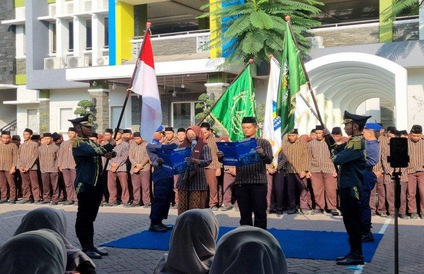
82 siswa diterima di PTN pada 2026
Sebanyak 68 siswa lolos jalur SNBP dan 14 siswa lebih dulu diterima di Poltekkes Kemenkes Surabaya.

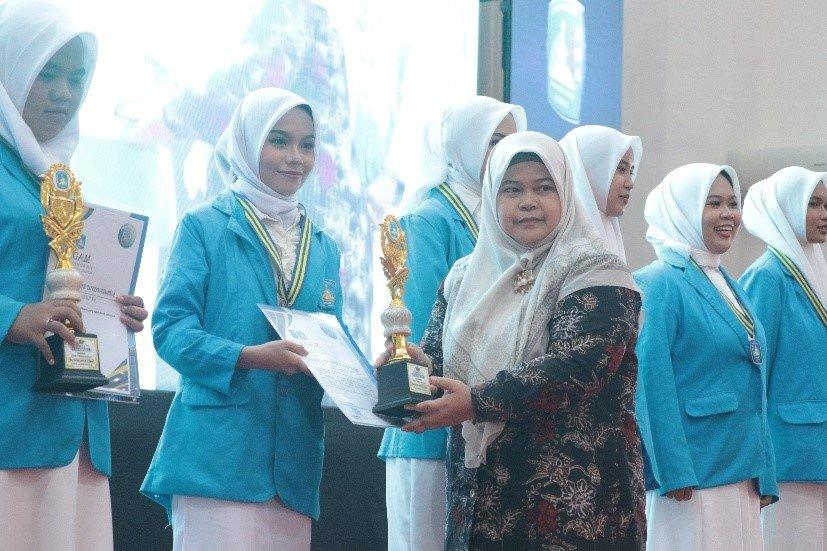
- Parlemen Remaja DPR RI 2026
Thariqh Ramadhani, kelas XII-F1, siswa pertama sekolah yang lolos.
- Jumbara PMR X Jawa Timur
Dua siswa mewakili PMR Wira Kabupaten Sidoarjo, 2025.
- Award prestasi kelas XII
Diberikan di muwadda'ah 477 lulusan, Mei 2026.
Berita sekolah terbaru
Ditulis oleh tim sekolah dari kegiatan siswa sepanjang tahun ajaran.


SPMB 2027/2028 dalam empat gelombang
Formulir Rp250.000. Diterima di sekolah negeri, uang daftar ulang dikembalikan paling lambat 3 hari setelah pengumuman.
- Gelombang inden1 Sep – 31 Okt 2026
- Gelombang I1 Nov – 31 Des 2026
- Gelombang II2 Jan – 31 Mar 2027
- Gelombang IIIMulai 1 Apr 2027
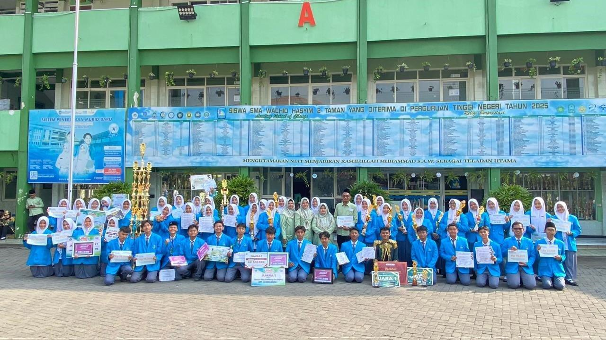
Formulir pendaftaran SPMB
Panitia menghubungi orang tua lewat WhatsApp untuk melengkapi berkas. Kantor buka Senin–Jumat 07.00–14.00, Sabtu 08.00–12.00.
- SyaratLulus ujian sekolah
- BerkasFotokopi ijazah atau SKL
- Pas foto3 x 4, empat lembar
- BeasiswaPrestasi dan hafal Al-Qur'an
WhatsApp Pak Agung WhatsApp Pak Fauzi